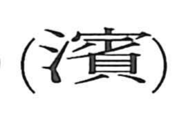

濱

Kun: hama, migiwa, mizugiwa | On: hin
beach ・ shore ・ waterside ・ water's edge
Explanation
濱 is a phono-semantic character: the water element sets the scene at the water’s edge, while 賓 (on reading hin) supplies the sound and carries a ritual image. 賓 depicts a ceremony in the ancestral hall in which the hind legs of a sacrificial animal are offered together with a shell used as a curse implement, an act of worship that welcomes the deities. Placed by water, this becomes a deity‑welcoming rite conducted along the shore, giving the senses of waterside, water’s edge, and beach. A related form is 瀕, which uses 頻 as the phonetic and portrays holding such a waterside ceremony while wearing ritual headgear.